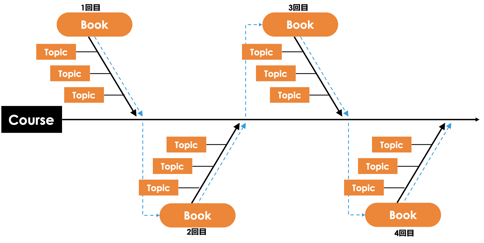

1. CHiBi-CHiLO --- マイクロ・コンテンツ・システム 設計文書¶
この文書は、本システム CHiBi-CHiLO(呼称、ちびちろ)を設計するにあたって考慮した内容と、決定した内容を記録した文書です。
1.1. 本システムの目的¶
本システムは、学習コンテンツの再利用を促進することを目的とする。
この考え方のは背景には、下記の5Rがある。
- Retain(保持)
- Reuse(再利用)
- Revise(改版)
- Remix(組み合わせ)
- Redistrubtion(再配布)
1.2. 本システムを構成する概念¶
1.2.1. 概念図¶
![left to right direction
rectangle "Repository layer" as Repository {
usecase "OER" as OER1
usecase "OER" as OER2
usecase "OER" as OER3
usecase "OER" as OER4
}
rectangle "Referatry layer" as Referatry {
usecase "RO" as RO1
usecase "RO" as RO2
usecase "RO" as RO3
usecase "RO" as RO4
}
rectangle "Topic layer" as Topic {
usecase "TO" as TO1
usecase "TO" as TO2
usecase "TO" as TO3
usecase "TO" as TO4
usecase "TO" as TO5
usecase "TO" as TO6
}
rectangle "Construction layer" as Construction {
usecase "学習目標" as goal
usecase "TO" as TO7
usecase "TO" as TO8
usecase "TO" as TO9
usecase "TO" as TO11
usecase "TO" as TO12
usecase "TO" as TO13
usecase "TO" as TO14
usecase "TO" as TO15
usecase "TO" as TO16
usecase "TO" as TO17
}
rectangle "Output layer" as Output {
usecase "LC" as LC1
usecase "LC" as LC2
usecase "LC" as LC3
}
OER1 <-- RO1
OER2 <-- RO2
OER3 <-- RO3
OER4 <-- RO4
RO1 <-- TO1
RO2 <-- TO1
RO3 <-- TO2
RO4 <-- TO2
RO3 <-- TO3
RO1 <-- TO4
RO3 <-- TO5
RO4 <-- TO6
goal -- TO7
goal -- TO8
goal -- TO9
TO7 -- TO11
TO7 -- TO12
TO8 -- TO13
TO8 -- TO14
TO9 -- TO15
TO9 -- TO16
TO9 -- TO17
Topic --> Construction
Construction --> Output](_images/plantuml-0d7eea61cfad5bd876d113987804b43e335a2c9d.png)
上記の図における略号
- OER: Open Educational Resources
- RO: Resource Object
- TO: Topic Object
- LC: Learning Content
Micro CHiLOにおいて，実体はリソースレイヤーのOERとアウトプットレイヤーの学習コンテンツのみである． それ以外は，全てデータセットである．
注釈
プログラマー向けの注釈。OERとLearning Content/学習コンテンツ は、一般ユーザーに認知されているか。であり、Resource Object, Topic Object, Map Object は、本システム内部のデータ構造であり、そのまま一般ユーザに認知されない。あくまでも内部データ構造である。という意味である。

- 人々
- 教育機関，教師，学生，一般の人々も含めたインターネットにアクセス出来る全ての人.
- ユーザー
- 本システムの利用者，当面は教育機関に所属する教師
- OER（Open Educational Resources）
- クリエイティブコモンズでインターネットで公開されている情報の全て． URLでアクセスできるコンテンツの本体 Webページではなく動画とかスライドとかそのページで配信している本体コンテンツ 当面，YouTube等で公開されているビデオを対象とする．
- Resource Object（リソースオブジェクト）
- OERにメタデータを付与するデータセット． OERと1：1対応． リソースオブジェクトはウィキペデイアのように，誰でも作成でき，誰でも修正，削除できる． 不特定多数が作成したOERから，教育・学習を目的として利用可能なものを探しやすくするだけではなく，教育・学習コンテンツとして，選定する役割がある． 当面は，教育機関のみがリソースオブジェクトを作ることが出来ることとし，OERの質を保証する． リソースの喪失(404や変更に伴う影響)は考慮しない。再生時に無いことが分かるだけ。 その判別は機械的にやるならサーバサイドだと検索エンジンのロボットのつもりになるし、クライアントでなら拡張機能での実装が必要になる。 いずれもあまり現実的じゃない。 リソースとトピックのメタデータについて、リソースに対してはリソース配信元URLからの自動取得を行う(将来的に、各サービスの利用規約に応じて実施を検討)。 人が入力するメタデータはトピックに対して行う(当面は自動取得できないリソースの情報を手動で書くことになる)。
- Topic Object（トピックオブジェクト）
- リソースオブジェクトとして登録されたOERに，タイトルや解説を追加したデータセット． 動画ならTimeRange(時間抜きだし)、スライドならページ(範囲)指定、htmlならxpathでの抜き出し、 WebBundleならその中のファイルパスなど、リソースからトピックの粒度を抜き出す機能を持ち、 分割されたトピックレベルのメタデータを持つ。 これがマイクロコンテンツそして，現システムのビデオ，CHiLO Bookの1ページに相当する． リソースは当面一部サービスの動画だけ、トピックの分割機能の実装は最初は行わないが、将来単一TimeRangeに対応したい。
- Map Object（マップオブジェクト）
- 学習目的を達成するため，トピックオブジェクトを並べ構造化したデータセット． トピックの組み合わせ構造(グラフ)とその構造全体に対するメタデータを持ち、構造のサブセットに対する情報や、 トピック間のrelation(グラフのエッジ)に対するメタデータは当面保有しない。 しかしサブツリーのルートノードにタイトルくらいないと(文書でいえば章のタイトルがない、コースでいえば講義タイトルがないなど)実用上困るのをどうするか検討(トピックの親ノードにもタイトルだけ付与可能にする？)。 グラフの形はひとまず単一ルートで深さ有限のツリーだけに対応する。(一般のグラフに対応するとUI的にも利用者の理解的にも無理が生じる恐れがある)その外の構造の対応は需要とコストで随時検討だがある程度経験とデータがたまってから次を見定める。 深さ有限のツリーはフォルダツリー編集、目次編集のようなUIで実装することでドキュメント編集で直感的に理解しやすくする。 ある教育機関の案件は深さ三段のツリーであり、ルートがコースにあたるものになる。セクションの追加も踏まえるとまずは4段ツリーの編集画面を用意すると良さそう。 各種電子書籍を目次や段落で自動分割すればリソースURLの指定から一括トピック生成が可能になる未来がある。その場合などはサブツリーへのメタデータ自動取得もある程度できそう(章のタイトルとか取れる)。トピック、リソース、マップの関係はそういう将来のユースケースを念頭に置く
- Learning Content（学習コンテンツ）
- マップオブジェクトに従ってトピックオブジェクトおよびトピックオブジェクトを，人々が閲覧出来る形式に出力したもの． 出力形式は，HTML，電子書籍，PDF等が考えられるが，当面はHTML形式で出力する． 人々は，この学習コンテンツにアクセスして学習する．
1.3. 設計思想¶
- 認可は行うが、認証は行わない。
- CHiBi-CHiLOのポリシー · Issue #187 · npocccties/ChibiCHiLO
- 認証で同一エンティティを確実に保証するのは、とても大変なシステムになってしまう。具体例としては、NIIのシボレスなど。